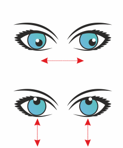
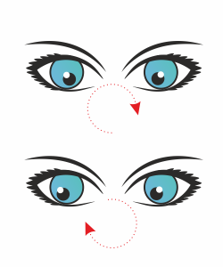

Разминка глаз не отходя от рабочего места
Правила выполнения упражнений для глаз
Упражнения для глаз, как и любой вид гимнастики, идут на пользу, только если выполняются регулярно
с учетом всех правил и на протяжении длительного времени. Они направлены на тренировку, укрепление и
расслабление глазных мышц, либо находящихся в состоянии покоя, либо, наоборот, испытывающих большие
нагрузки (например, при работе за компьютером). Можно воспользоваться нашими советами по улучшению
зрения или найти множество эффективных бесплатных упражнений для глаз онлайн. Это поможет Вам в
профилактике заболеваний глаз. Помните, что не следует за один раз делать много повторений: выполнение
зрительной гимнастики за 2–3 подхода в течение дня будет намного более полезным. В перерывах между
повторениями рекомендуется быстро моргать, это способствует уменьшению нагрузки на глазные мышцы.
Упражнения для расслабления глаз
Упражнение 1 - "Письмо носом"
Подобное упражнение для глаз помогает расслабить мышцы и шею. Их перенапряжение ведет к нарушению
правильного кровоснабжения, что вредно для здоровья. Данное упражнение для зрения рекомендуется выполнять
в положении сидя. Но это необязательное требование. Сначала необходимо расслабиться, закрыв глаза.
Представьте, что к кончику Вашего носа прикреплена ручка. Важно, чтобы при этом Вы не напрягали глаза.
Начинайте двигать воображаемой ручкой в воздухе, будто Вы рисуете или пишете.

Упражнение 2 - "Пальминг"
Для выполнения этого зрительного упражнения необходимо расслабиться и сесть прямо.
Прикройте глаза руками так, чтобы центр правой ладони находился на уровне правого зрачка.
Это же условие необходимо соблюсти и для левой стороны. Не стоит сильно прижимать ладони к лицу.
Пальцы можно перекрестить на лбу или расположить рядом — делайте так, как Вам удобно.
Только важно, чтобы отсутствовали "щелочки", пропускающие свет. Проверьте, что Вы соблюдаете все правила.
Теперь опустите веки. Ваши глаза не только закрыты, но и дополнительно защищены ладонями,
что способствует полному расслаблению.
Упражнение 3 - "Сквозь пальцы"
Для выполнения подобной гимнастики для зрения согните руки в локтях, при этом ладони с вытянутыми
разомкнутыми пальцами должны располагаться ниже уровня глаз. Затем плавно поворачивайте головой влево
и вправо, при этом смотрите вдаль сквозь пальцы. Не задерживайте взгляд на конкретных предметах.
При правильном выполнении упражнения создается впечатление, будто Ваши руки движутся. Сделайте по 3
поворота, попеременно открывая и закрывая глаза. Повторите 20–30 раз. При этом дышите свободно и
расслаблено. Детям можно устроить небольшую физминутку для глаз, которая поможет в игровой форме
быстро снять напряжение.
Упражнение 4 – "Движения глазами в стороны"
При выполнении данного зрительного упражнения необходимо по 7 раз проделать глазными яблоками
движения в следующих направлениях: вверх-вниз, влево-вправо, прямо-вверх-прямо-вниз, прямо-влево-прямо-вправо.
Далее направьте взгляд на верхний левый угол комнаты и плавно переведите глаза к нижнему правому и наоборот.
Повторите каждое движение по 7 раз. Вы можете делать это не очень быстро. Для лучшего эффекта, проявите фантазию,
выполняя это упражнение для зрения – описывайте взглядом полукруги, разнообразные геометрические фигуры
или просто хаотично поворачивайте глазные яблоки, добиваясь при этом того, чтобы Вы видели четкое изображение.
Также можно воспользоваться онлайн-схемами тренировок для зрения с подробными иллюстрациями.

Упражнение 5 - "Большой круг"
Этот комплекс гимнастики для глаз заключается в выполнении круговых движений.
Во время упражнения для зрения необходимо держать голову в неподвижном состоянии.
Представьте перед собой большой циферблат. Не торопясь проведите взглядом по его
кругу сначала по часовой стрелке, а затем против нее, отмечая каждую цифру. Важно,
чтобы проводимая взглядом линия не обрывалась и получалась ровной. С каждой
тренировкой радиус воображаемого круга необходимо постепенно увеличивать. В
завершение спокойно поморгайте.

Упражнение 6 - "Восьмерка"
В данном случае необходимо соблюдать обязательное условие: держите голову в
неподвижном состоянии и двигайте только глазами. Плавно опишите взглядом горизонтальную
"восьмерку" или вопросительный знак так, чтобы создаваемый в воздухе рисунок имел
максимально большой размер. Однако глазные мышцы при этом не должны перенапрягаться.
Выполняйте движения по несколько раз, поочередно меняя направления.

Упражнение 7 – "Напряжение взгляда"
Для выполнения этого упражнения для улучшения зрения поднесите как можно ближе к
глазу любой небольшой предмет (например, кончик шариковой ручки). Сделайте так, чтобы
все его детали были ясно и четко видны. Задержите взгляд на предмете некоторое время.
При этом кольцевая и косые мышцы глаза предельно напряжены, при правильном выполнении
этого упражнения выпуклость хрусталика и удлинение глазного яблока должны достичь
максимального значения. Теперь расслабьте органы зрения.
Упражнение 8 "Взгляд в окно"
Наклейте на оконное стекло круг диаметром 3–5 мм. Его нужно расположить на расстоянии
30–35 см от лица на уровне глаз. Найдите любой удаленный предмет (столб, дерево и т. д.),
входящий в область круга, и попеременно переводить взгляд с него на этот предмет и обратно.
Еще один вариант подобной зрительной гимнастики для глаз: в течение 10 секунд смотрите
пристально на расположенный вдали предмет в окне, после чего переведите взгляд на
ладонь или запястье. Повторите 15 раз.
Упражнение 9 – "Изменение фокусного расстояния"
При выполнении такого упражнения для тренировки глаз, нужно сосредоточить взгляд на пальце,
находящемся на расстоянии 40–50 см от лица. Затем поочередно приближать и отдалять его на расстояние
вытянутой руки. Важно приближать палец настолько близко, чтобы рисунок на поверхности кожи был
отчетливо виден. Такой комплекс упражнений для глаз необходимо повторить 10 раз. При этом палец
нужно перемещать в следующих направлениях: влево-вправо, по диагонали справа налево и слева направо.